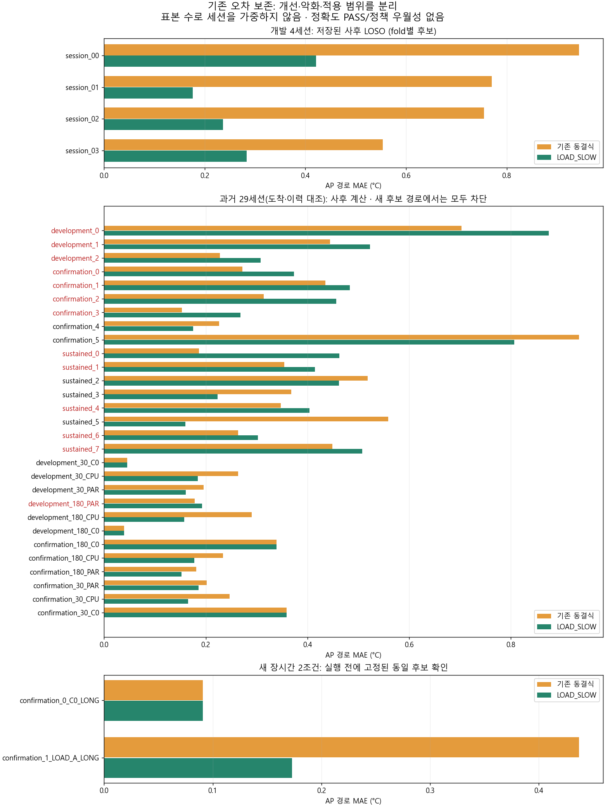

| 항목 | 현재 판정 |
|---|---|
| 수식의 숫자 | 기존33＋새2 기록에 저장된 사후·확인 계산 |
| 새 진단 계약 일치 | 등록 macro 개발4＋장시간 C0/LOAD_A2, 총6 |
| 독립 확인 | C0 1＋LOAD_A 1 조건 block, 장시간 전이 진단 |
| 정책 차이 구분 | 미완료. 기존29 도착·이력 대조는 이 API에서 차단 |
동일 A24·CPU1·기존 모델/입력/4resident·준비 이력, 부하 전 마지막 AP26.5–28.8°C, DEV_A/DEV_B 또는 C0_LONG/LOAD_A_LONG의 실제 상태·전환·시간이 맞을 때만 명시적으로 AP를 계산합니다. 이 온도 범위는 기기 실행 gate가 아닙니다. 범위 밖은null이며 J·응답·열 피드백 값으로 대체하지 않습니다.
원식/후보/구현 해시를 확인하고 부하 후 AP·전력을 예측에 전달하지 않습니다. τ1920·내부 열 상태·반복 안정성·모든 이력은 아직 미확정입니다.
과거29의 평균 MAE는0.3217→0.3228°C이며13세션이 악화했습니다. 새 LOAD_A는0.4371→0.1728°C, C0는0.0908°C로 원식과 같습니다. 데이터 역할과 계산 범위를 섞어 전체 개선으로 표현하지 않습니다. 아래 빨간 세션 이름은 악화 사례입니다.
한국어 보고서·API 사용 · 고정 계약 · 35개 입력 검사 · 모든 기존 오차 · 악화13개 · 검증·보존
